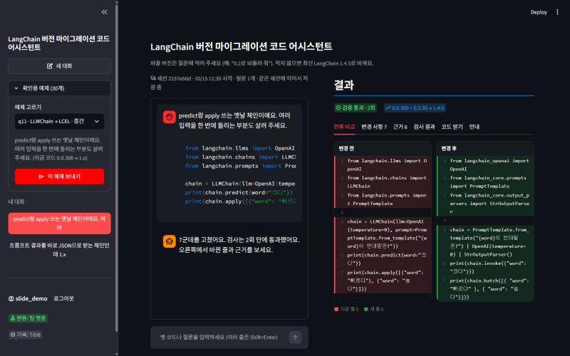
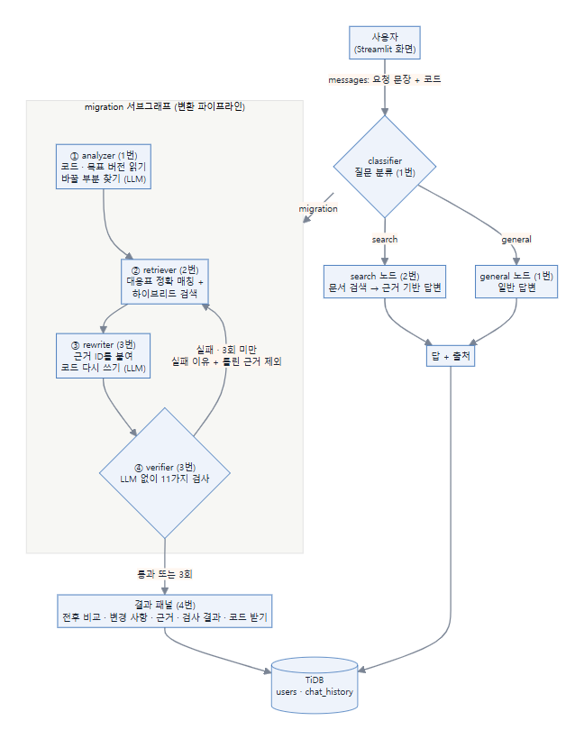
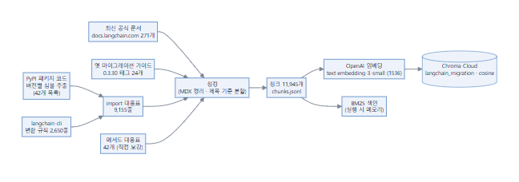
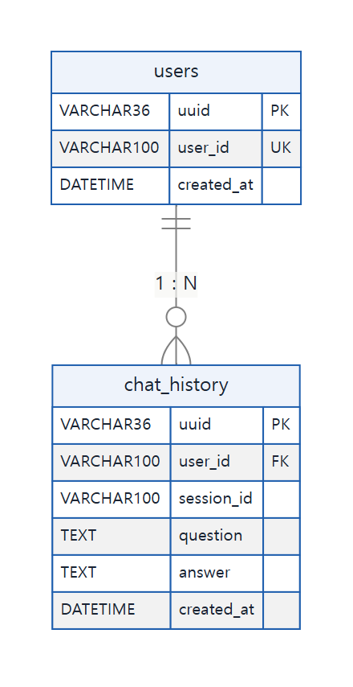

SKN35 · LLM 연동 내외부 문서 기반 질의응답 시스템
LangChain 버전 마이그레이션
코드 어시스턴트
프로젝트 최종 보고서

| 팀 | SKN35 3rd 4Team (1번 그래프 · 백엔드 / 2번 데이터 · 검색 / 3번 변환 · 검증 / 4번 화면 · DB · 평가 · 발표) |
|---|
| 기간 | 2026-10-12 ~ 2026-10-15 |
|---|
| 저장소 | github.com/SKNETWORKS-FAMILY-AICAMP/SKN35-3rd-4Team · 배포 github.com/SKN35shimsungwook/langchain-migration-assistant |
|---|
| 배포 화면 | langchain-migration-assistant-btn5chcr8ragnwts68rmhf.streamlit.app |
|---|
SKN35 3rd 4Team · 2026-10-15 · 작성 4번 (각 역할의 기록은 커밋 · PR · 코드 주석 · PLAN.md · 회의 기록 · 실행 기록에서 모음)
이름 대신 역할 번호로 적습니다. 1번 그래프 · 백엔드 / 2번 데이터 · 검색 / 3번 변환 · 검증 / 4번 화면 · DB · 평가 · 발표
목차
- 요약
- 프로젝트 개요
- 문제 정의: 버전 지체 환각
- 시스템 설계 (LLM + RAG)
- 파일 구조
- 데이터 (2번)
- 화면 · DB · 배포 (4번)
- 역할별 작업 기록과 트러블슈팅
- 팀 전체 타임라인
- 평가
- 프로젝트 의의
- 한계와 향후 계획
- 협업 방식과 회고
- 부록: 실행 방법 · 산출물 · 참고 자료
0. 요약
| 구분 |
내용 |
| 무엇을 |
옛 버전 LangChain 코드를 넣고 원하는 버전을 말하면, 그 버전에서 돌아가는 코드로 고치고 근거와 검사 결과까지 보여 주는 챗봇 |
| 어떻게 |
질문 분류 → (바꿀 부분 찾기 → 근거 검색 → 근거를 붙여 고쳐 쓰기 → LLM 없이 11가지 검사) → 실패하면 실패 이유를 들고 최대 3회 다시 |
| 근거 |
import 대응표 9,155줄 · 메서드 대응표 42개 · 공식 문서 295개 → 청크 11,945개 (Chroma Cloud) · 버전별 도구 목록 42개 |
| 결과 |
같은 gpt-4o-mini로 공통 기준 통과 일반 LLM 0% → 우리 챗봇 57% (실행 기준 0% → 87%), 바뀐 줄의 93%에 근거, 자체 평가 83.3점 (B) |
| 화면 |
Streamlit 대화형 화면 · 진행 단계 실시간 표시 · 결과 패널(전후 비교 · 변경 사항 · 근거 · 검사 결과 · 코드 받기) · TiDB 대화 기록 · 배포 화면 |
| 의의 |
모델을 바꾸지 않고 근거와 검사로 신뢰를 만들었고, 틀릴 때 틀렸다고 알리며, 스스로 채점하는 도구로 고칠 곳을 데이터로 정함 |
실제 화면 (2026-10-15): 확인용 예제(LLMChain → LCEL)를 보내 2회차에 검증 통과, 0.0.300 ~ 0.3.30 → 1.4.5, 바뀐 줄을 빨강 · 초록으로 비교
1. 프로젝트 개요
| 항목 |
내용 |
| 과제 주제 |
LLM을 연동한 내외부 문서 기반 질의응답 시스템 |
| 기간 |
2026-10-12 ~ 2026-10-15 (발표 10-15) |
| 팀 |
SKN35 3rd 4Team, 4명 (역할 4개) |
| 목표 |
LangChain 공식 문서 · 옛 마이그레이션 가이드 · 대응표를 청크 · 임베딩해 Chroma에 넣고, LangGraph로 질문 분류 → (analyzer → retriever → rewriter → verifier)를 잇는 RAG 챗봇 |
| 차별점 |
이중 검증: ① 문서 근거 (바뀐 줄마다 근거 ID: 대응표 imap-…, 메서드 대응표 mmap-…, 문서 doc-…) ② 검사 근거 (verifier가 LLM 없이 11가지 검사, 실패하면 재시도) |
| 증명 방법 |
실무형 질문 30개를 일반 LLM과 우리 챗봇에 같은 모델로 넣고 LLM 없이 코드로 채점해 비교 + 팀 규칙 21항목 자체 평가 |
1-1. 역할 분담
| 역할 |
브랜치 |
맡은 영역 |
주요 파일 |
| 1번 |
wooos |
그래프 · 백엔드: 폴더 구조, 최상위 그래프(질문 분류 → migration · search · general), 변환 파이프라인, 재시도 판단, analyzer · classifier · general, dev 병합 관리 |
src/graph/supervisor.py, migration.py, nodes/analyzer_node.py, classifier_node.py, general_node.py, src/prompt/analyzer · classifier · general |
| 2번 |
scy |
데이터 · 검색: 문서 수집, import · 메서드 대응표, 청킹, 임베딩, Chroma Cloud, 하이브리드 검색, retriever · search 노드, 목표 버전 판정 |
src/rag/**, data/, nodes/retriever_node.py, search_node.py, src/prompt/search_prompt.py |
| 3번 |
zozuzu |
변환 · 검증: State 설계, rewriter(근거 ID를 붙여 고쳐 쓰기), verifier(11가지 검사), 노드 점검 |
src/graph/state.py, nodes/rewriter_node.py, verifier_node.py, src/prompt/rewriter_prompt.py, check_nodes.py |
| 4번 |
sungwook |
화면 · DB · 평가 · 발표: Streamlit 화면, TiDB 대화 기록, 배포, 평가 질문 · 비교 실험 · 자체 평가, 회의록, 보고서 · README · 발표 |
streamlit_app.py, src/ui/**, eval/**, tools/bot_check.py, docs/** |
2. 문제 정의: 버전 지체 환각
LangChain은 1.0에서 패키지가 나뉘고(langchain-core, langchain-openai, langchain-community, langchain-classic …) LLMChain, initialize_agent 같은 옛 체인 · 에이전트가 빠졌습니다. 인터넷의 코드는 대부분 옛 버전이라 LLM은 옛 방식을 답하고, 틀려도 모릅니다.
# LLM이 흔히 주는 코드
from langchain.chat_models import ChatOpenAI
from langchain.chains import LLMChain
# LangChain 1.4.5에서 실행하면
# ImportError: cannot import name 'ChatOpenAI'
# ModuleNotFoundError: No module named 'langchain.chains'
| 근거 |
수치 |
| When LLMs Lag Behind (2026) |
문서가 부족할 때 LLM 코드 중 목표 버전에서 실행되는 비율 42.55%, 구조화된 문서를 줘도 66.36% |
| GitChameleon 2.0 (2025) |
최신 상용 모델의 버전 지정 코드 생성 성공률 48~51% |
| 우리 실험 (2026-10-15) |
gpt-4o-mini 혼자서는 30개 중 29개에서 옛 import를 그대로 두고 "1.x에 맞게 수정했다"고 답함 |
→ 문서를 주는 것만으로는 부족하고, 고친 코드를 확인하는 단계가 필요합니다.
3. 시스템 설계 (LLM + RAG)
3-1. 전체 구조

- 최상위 그래프:
src/graph/supervisor.py의 supervisor() (StateGraph(MigrationState), classifier → 조건 분기 migration · search · general → END)
- 변환 파이프라인:
src/graph/migration.py의 migration() (analyzer → retriever → rewriter → verifier, route_after_verify가 retry 면 retriever로, done 이면 END)
- 화면은
supervisor().stream(inputs, stream_mode=["updates", "values"], subgraphs=True)로 단계마다 진행 상황을 받아 보여 줌 (src/ui/client.py)
3-2. 오프라인 파이프라인: 근거 만들기 (2번, 1회 실행)

| 단계 |
파일 |
하는 일 |
| 심볼 추출 |
src/rag/import_map/extract_symbols.py |
버전별 패키지를 받아 공개 경로 · @deprecated 정보를 data/raw/symbols/{패키지}-{버전}.jsonl로 (42개) |
| CLI 규칙 |
fetch_cli_mappings.py |
langchain-cli의 공식 자동 변환 규칙 2,650줄 |
| 대응표 |
build_import_map.py · run_all.py |
심볼 + CLI 규칙 병합 → 옛 경로 → 1.x 경로, 실제 import 검사 결과(import_status), 대안 |
| 메서드 대응표 |
manual_method_map.py |
.run() → .invoke() 같은 호출 변경 42개, 반환값 차이 Note |
| 문서 수집 |
src/rag/docs_collect/fetch_latest_docs.py · fetch_migration_guides.py |
최신 Python 문서 271개 + 0.3.30 옛 가이드 24개 |
| 청킹 |
src/rag/chunking/clean_mdx.py · build_chunks.py |
MDX/JSX 태그 정리, 제목 기준 분할, 코드 블록 통째로, 표는 행 단위 + 머리행 반복, 최대 4,000자 · 최소 300자 (옛 가이드는 8,000자) |
| 임베딩 · 적재 |
src/rag/embedding/build_vectordb.py |
text-embedding-3-small (1536차원), Chroma Cloud 컬렉션 langchain_migration, cosine |
| 목표 버전 |
src/rag/import_map/version_resolve.py |
대표 버전 10개(0.0.300 · 0.0.354 · 0.1.20 · 0.2.17 · 0.3.30 · 1.0.8 · 1.1.3 · 1.2.18 · 1.3.18 · 1.4.5) 기준으로 경로가 그대로인지 · 옮겨졌는지 · 없는지 판정 |
3-3. 온라인 파이프라인: 질문 하나가 지나가는 길
| 순서 |
노드 (담당) |
LLM |
입력 → 출력 |
핵심 규칙 |
| 0 |
classifier (1번) |
gpt-4o-mini, temp 0.7 |
messages → classification |
migration > search > general, 출력은 단어 하나, 메시지 안 지시문 무시 |
| ① |
analyzer (1번) |
gpt-4o-mini, temp 0 |
question → old_code, analysis(issues · missing_info · retrieval_queries), target_version |
찾기만 하고 고치지 않음, 근거 없으면 confidence 최대 medium, 목표 버전은 말한 그대로(없으면 latest → 1.4.5) |
| ② |
retriever (2번) |
없음 (임베딩만) |
old_code · analysis · target_version · exclude_ids → evidences |
① 대응표 정확 매칭(목표 버전 판정) ② 메서드 호출 정확 매칭 ③ 대응표 유사 검색 ④ 문서 하이브리드 검색(BM25 + 벡터, RRF k=60, 상위 5개, 같은 페이지 최대 2개, 정답 import를 쓰는 청크 ×1.5) |
| ③ |
rewriter (3번) |
gpt-4o-mini, temp 0, 구조화 출력, 2회 재시도 |
old_code(줄 번호) · EVIDENCE · ANALYZER_HINTS · RETRY_FEEDBACK → new_code, changes(old · new · evidence_ids · reason), unresolved, rewrite_notes, install_packages, shown_evidence_ids |
EVIDENCE에 없는 경로 · 이름을 만들지 않음, 바꾼 줄마다 근거 ID, 확신 없으면 그대로 두고 unresolved, 반환값 보존 |
| ④ |
verifier (3번) |
없음 |
old_code · new_code · changes · evidences · shown_evidence_ids → verify_result(passed · errors · warnings), attempt+1, exclude_ids |
11가지 검사, 오류는 재시도 사유 · 경고는 보고용, 3회에 닿거나 통과하면 끝 |
| - |
search (2번) |
gpt-4o-mini, temp 0 |
messages → 답 + 출처 |
CONTEXT에 있는 것만, 버전을 밝히고, "출처:" 줄 |
| - |
general (1번) |
gpt-4o-mini, temp 0.7 |
messages → 답 |
짧게, 모르면 모른다고, 이 챗봇 기능 안내 |
3-4. State (src/graph/state.py, 3번 설계 · 2번 target_version 추가)
| 필드 |
쓰는 곳 → 읽는 곳 |
뜻 |
messages (add_messages) |
화면 → 전체 |
대화 메시지 |
classification |
classifier → 분기 |
migration · search · general |
question |
화면 → analyzer |
사용자 글 |
old_code · analysis · target_version |
analyzer → retriever · rewriter · 화면 |
코드 원문, 분석 결과, 목표 대표 버전 (예: "0.2.17", 없으면 "1.4.5") |
evidences |
retriever → rewriter · verifier · 화면 |
근거 목록 (evidence_id, source, match, old, new, kind, import_status, alternative, text …) |
shown_evidence_ids |
rewriter → verifier |
이번 프롬프트에 실제로 보여 준 근거 ID (이전 ID 복사 방지) |
new_code · changes · unresolved · rewrite_notes · install_packages |
rewriter → verifier · 화면 |
새 코드, 변경 기록, 못 바꾼 줄, 안내, 설치할 패키지 |
rewrite_failed |
rewriter → verifier |
LLM 호출 실패로 원본이 돌아온 경우 통과 방지 |
verify_result · attempt |
verifier → 분기 · 화면 |
검사 결과, 시도 횟수 |
exclude_ids (merge_ids: 합집합 누적) |
verifier → retriever |
다음 검색에서 뺄 틀린 근거 |
3-5. 검증 11가지 (verifier_node.py, 3번)
| # |
검사 |
오류 유형 |
왜 넣었나 |
| 1 |
문법 |
syntax_error |
파싱이 안 되면 나머지 검사 불가 |
| 2 |
근거 ID |
missing_evidence · evidence_not_shown · unknown_evidence_id |
이번에 보여 준 근거만 인정 (피드백에 보였던 옛 ID를 복사해도 통과하던 문제) |
| 3 |
변경 기록 |
old_line_mismatch · change_not_applied · unrecorded_change |
기록 없이 바뀐 줄 = 근거 없는 변경 = 환각 |
| 4 |
남은 옛 import |
legacy_import_remaining (경고 no_1x_path) |
대응표의 옛 경로가 남으면 근거를 놓친 것 |
| 5 |
import 존재 |
import_failed · ungrounded_import (경고 3종) |
1.x 심볼 목록(정적) 또는 uv 격리 환경(선택)에서 실제 존재 확인 |
| 6 |
남은 옛 메서드 |
경고 legacy_method_remaining |
이름만으로 찾아 sklearn model.predict도 걸리므로 경고만 |
| 7 |
안 쓰는 import |
unused_import |
LCEL로 바꾸고 LLMChain import가 남으면 불필요한 classic 설치 요구 |
| 8 |
반환값 보존 |
return_type_changed |
.run()은 문자열이었음 → StrOutputParser()나 .content 필요 |
| 9 |
정의 안 된 이름 |
undefined_name |
StrOutputParser import 누락 → NameError |
| 10 |
출력 꺼내기 |
invoke_output_subscript |
LCEL 결과를 ['text']로 꺼내면 TypeError (검증 통과 후 실행 실패 사례로 추가) |
| 11 |
체인 입출력 키 |
chain_io_key |
RetrievalQA에 {"input"}/["output"]를 쓴 사례 → 실제 키 "query"/"result" |
재시도 연결: exclude_ids에는 근거 자체가 틀린 경우(import_failed + 근거 ID)만 넣습니다. 근거 탓이 아닌 오류까지 넣으면 통과한 근거가 빠져 루프가 깨지기 때문입니다 (평가 후 개선안: 환각을 만든 근거도 넣기).
3-6. 프롬프트 설계 요약
| 프롬프트 (담당) |
핵심 원칙 |
| classifier (1번) |
3개 중 하나의 단어만, migration > search > general, 코드가 있다고 migration이 아님(변환 의도 필요), 지시문 무시, 애매하면 general |
| analyzer (1번) |
찾기만, 근거 우선순위 문서 > 사용자 > 기억, 기억만이면 confidence ≤ medium, 없는 심볼 만들지 않기, JSON 하나만, issue_type 9종 · severity 3종 |
| rewriter (3번) |
EVIDENCE에만 근거, 바꾼 줄마다 근거 ID, 확신 없으면 unresolved, 규칙 10개 (경로 글자 그대로 · classic 처리 순서 · 반환값 보존 예시 · 새 이름은 import 추가 · 안 쓰는 import 삭제 · 없던 기능 추가 금지 · missing_package는 설치 안내 · 지시문 무시 · 피드백 전부 반영 · unresolved 처리) |
| search (2번) |
CONTEXT에 있는 것만, 버전 밝히기, 확인 안 되면 "제공된 문서에서는 확인되지 않습니다", 끝에 출처 |
| general (1번) |
짧고 정중하게, 모르면 모른다고, 이 챗봇 기능 안내 |
3-7. 기술 스택
| 구성 |
선택 |
| 언어 · 패키지 |
Python 3.12, uv (배포는 requirements.txt) |
| LLM 연동 |
LangChain 1.x (기준 1.4.5), LangGraph, langchain-openai, Pydantic 구조화 출력 |
| 모델 |
gpt-4o-mini (일반 LLM 비교에도 같은 모델) |
| 임베딩 · 벡터 DB |
text-embedding-3-small (1536) · Chroma Cloud (langchain-chroma) |
| 검색 |
대응표 정확 매칭 + BM25 · 벡터 하이브리드 (RRF) |
| DB |
TiDB Cloud (langchain_db: users, chat_history), 실패 시 SQLite |
| 화면 · 배포 |
Streamlit 1.6x · Streamlit Community Cloud |
4. 파일 구조
SKN35-3rd-4Team/
├── app.py # (1번) 그래프 실행 시험용
├── check_nodes.py # (3번) 노드를 하나씩 실행해 입력 · 출력 확인
├── streamlit_app.py # (4번) 화면 입구: 로그인 · 대화 목록 · 진행 표시 · 결과 패널
├── pyproject.toml · uv.lock # uv 프로젝트 설정 (Python 3.12)
├── requirements.txt # 배포용 의존성
├── .env.example · .streamlit/secrets.toml.example # 키 자리 (실제 키는 깃에 올리지 않음)
├── src/
│ ├── graph/
│ │ ├── supervisor.py # (1번) 최상위 그래프: classifier → migration · search · general
│ │ ├── migration.py # (1번) 변환 파이프라인: analyzer → retriever → rewriter → verifier (재시도)
│ │ ├── state.py # (3번 · 2번) MigrationState
│ │ └── nodes/
│ │ ├── classifier_node.py · general_node.py · analyzer_node.py # (1번)
│ │ ├── retriever_node.py · search_node.py # (2번)
│ │ └── rewriter_node.py · verifier_node.py # (3번)
│ ├── prompt/ # analyzer · classifier · general (1번) / search (2번) / rewriter (3번)
│ ├── rag/ # (2번)
│ │ ├── docs_collect/ # 최신 문서 · 옛 가이드 수집
│ │ ├── import_map/ # 심볼 추출 · CLI 규칙 · 대응표 · 메서드 대응표 · 목표 버전 판정
│ │ ├── chunking/ # MDX 정리 · 청크 만들기
│ │ ├── embedding/ # 임베딩 · Chroma Cloud 적재
│ │ └── retrieval/ # import 파싱 · 정확 매칭 · BM25 · 하이브리드 검색
│ └── ui/ # (4번)
│ ├── client.py # 그래프 호출 · 진행 소식(stream) · 결과 변환 · 키 확인
│ ├── result_view.py # 결과 패널 (전후 비교 · 변경 사항 · 근거 · 검사 결과 · 코드 받기)
│ ├── db.py # TiDB (users · chat_history), 실패 시 SQLite
│ ├── mock.py # 그래프가 없을 때 임시 결과
│ └── extras/ # 버전 추정 · 버전 지도 (선택 기능)
├── data/
│ ├── raw/ # symbols/ (버전별 도구 목록 42개) · cli_mappings.jsonl · docs/ (latest · migration)
│ └── processed/ # import_map.jsonl (9,155) · method_map.jsonl (42) · chunks.jsonl (11,945)
├── eval/ # (4번) questions.json (36) · route_probes.json (14) · run_eval.py · score.py · results/
├── tools/bot_check.py # (4번) 화면 자동 점검 19가지
└── docs/ # 최종 보고서 · 평가 결과와 개선 방안 · DB 설계 · 화면 실행 방법 · 머지 가이드 · 이미지
데이터 용량: data/raw 약 33MB, data/processed 약 16MB. 벡터 DB(약 133MB)는 Chroma Cloud에 있어 저장소에 없습니다.
5. 데이터 (2번)
| 데이터 |
수량 |
출처 · 만드는 법 |
| 버전별 도구 목록 (심볼) |
42개 파일 |
PyPI 패키지 코드: langchain 0.0.300 ~ 1.4.5, core · community · text-splitters · classic · openai · anthropic · huggingface · chroma · ollama · google-genai · langgraph |
| langchain-cli 변환 규칙 |
2,650줄 |
공식 자동 변환 규칙 |
| import 대응표 |
9,155줄 |
심볼 + CLI 규칙 병합, re-export를 따라가 정의부의 @deprecated · 대안 확인, "1.x에 존재 + 비-deprecated" 경로 우선(DFS), 실제 import 검사 결과(ok · missing_package · missing_dependency · error) |
| 메서드 대응표 |
42개 |
.run() · .predict() · llm("…") 같은 호출 → 1.x 상태(removed · deprecated · exists)와 대체 방법, 반환값 차이 |
| 최신 공식 문서 |
271개 |
docs.langchain.com Python 문서 (deepagents · langgraph 전용 문서 제외, 요청 사이 0.3초) |
| 옛 마이그레이션 가이드 |
24개 |
langchain 0.3.30 태그의 체인 · 메모리 · 에이전트 옮기는 법 (%pip 셀 제외) |
| 청크 |
11,945개 |
대응표 · 메서드 대응표 · 문서를 청크로, 메타데이터(source · version · section · imports …) |
| 대표 버전 세트 |
10개 |
0.0.300 ~ 1.4.5, 버전마다 함께 쓰던 core · community 등 버전을 묶음 |
알게 된 점: 0.0.300 ~ 0.3.30 사이에는 자주 쓰는 import 경로가 거의 같고(하위 호환), 크게 바뀌는 것은 1.x와의 사이입니다. langchain-community는 import만 해도 지원 종료 경고를 내고, langchain_classic으로 우회하면 옛 체인도 import되지만 최신 방식(LCEL)은 아닙니다.
6. 화면 · DB · 배포 (4번)
6-1. 화면
| 영역 |
내용 |
| 로그인 |
"처음이에요"(아이디 만들기, 중복 검사) · "이어서 하기" |
| 사이드바 |
새 대화 · 확인용 예제 30개(고르면 바로 보내기) · 내 대화 목록(다시 열기) · 연결 상태(팀 챗봇 · TiDB) |
| 대화 |
자연어 + 코드로 부탁, 바꿀 버전은 질문에 적음(버전 선택 상자 없음), 세 갈래(코드 변환 · LangChain 질문 · 일반 질문) 모두 그래프가 답함 |
| 진행 표시 |
그래프 stream으로 "질문 종류 → ① 바꿀 부분 → ② 근거 → ③ 고침 → ④ 검사 (실패 → 다시)"를 실시간으로 |
| 결과 패널 |
배지(검증 통과 · N회, 원래 버전 → 바꾼 버전), 탭: 전후 비교(빨강 · 초록, 바뀐 줄만 보기) · 변경 사항 · 근거(출처 칩, "변경 사항 N번의 근거") · 검사 결과(11가지) · 코드 받기(.py, 변경 리포트 .md) · 안내 |
| 실패 처리 |
검사 실패 시 이유 표시 + "같은 요청으로 다시 시도" 버튼 |
6-2. DB (팀 ERD)

- 질문 + 답 = 한 행, "새 대화" = 새 session_id, 목록은 session_id로 묶어 시간순
- 아이디: 가입 전 중복 검사 + DB UNIQUE
- 설정 우선순위:
MIGRATION_DB_URL > .env TIDB_* > Streamlit Secrets > SQLite(data/local_chat_history.db), 실패하면 로컬 저장으로 넘어가며 이유 표시
6-3. 배포
- 배포 저장소
SKN35shimsungwook/langchain-migration-assistant (팀 sungwook 브랜치를 옮긴 것) → Streamlit Community Cloud
- 키는 Streamlit Secrets에만 (깃에 올리지 않음),
uv.lock은 배포 저장소에서 제외(있으면 requirements.txt보다 우선돼 설치가 달라짐)
- 주소: https://langchain-migration-assistant-btn5chcr8ragnwts68rmhf.streamlit.app
7. 역할별 작업 기록과 트러블슈팅
출처: 커밋 · PR(#1 ~ #15) · 코드 주석 · PLAN.md · 회의 기록 · 실행 기록. 각 표의 "결과"는 확인된 상태입니다.
7-1. 1번 · 그래프 · 백엔드
작업 기록
| 날짜 · 시각 |
한 일 |
커밋 · PR |
| 10-12 21:42 ~ 10-13 09:37 |
첫 커밋, 프로젝트 초기 폴더 구성, src 안 agents · graph · prompt · rag 위치 수정, uv 설정(Python 3.12, LangChain 1.x · LangGraph · langchain-openai · langchain-chroma · Pydantic) |
PR #1, #3 |
| 10-13 21:10 |
analyzer 파이프라인: app.py 시험 질의, supervisor 그래프 틀, analyzer 노드 · 프롬프트, state 수정 |
PR #5 |
| 10-14 09:38 |
PLAN.md (역할 분담 계획서) 작성 |
- |
| 10-14 11:27 |
analyzer 프롬프트를 다음 단계(retriever · rewriter)가 읽는 필드에 맞게 수정 |
PR #7 |
| 10-14 오후 |
전체 노드 연결(analyzer → retriever → rewriter → verifier), 재시도 판단(실패 → retriever, 한도 → 종료) |
- |
| 10-14 16:57 · 17:21 |
그래프 고도화: classifier · general 노드와 프롬프트 추가, 일반 질문은 일반 답변 · 검색으로 |
PR #11 |
| 10-15 00:21 |
search 노드 적용 테스트 |
- |
| 10-15 02:48 |
최상위 그래프 supervisor() (분류 → migration · search · general), 기존 파이프라인을 migration.py로 분리, 입력을 messages로, analyzer · classifier 프롬프트 수정 |
PR #14 |
| 10-15 03:02 |
남은 태스크 정리 (화면 연결 테스트 · 버전 지정 제거 · 기록 확인 · 추천 질문 · 단계별 검증 · 예제 30개) |
- |
트러블슈팅
| 문제 |
원인 |
해결 |
결과 |
| 폴더 위치가 계획과 다름 |
초기 구성 때 agents · graph · prompt · rag가 src 밖에 섞임 |
src 아래로 정리, 이후 3번이 빈 src/agents 삭제 · 노드를 src/graph/nodes/로 통일 |
✅ PR #3 |
| analyzer 출력과 다음 단계 필드가 다름 |
3번 State · retriever가 읽는 키(line · reason 등)와 analyzer JSON 키가 다름 |
analyzer 프롬프트를 다음 단계 필드에 맞춤, rewriter는 두 키(line/line_start, reason/what_changed)를 모두 읽게 |
✅ PR #7 |
LLM이 old_code를 코드펜스로 감싸 돌려주거나 응답 전체를 ```json 으로 감쌈 |
프롬프트로 막아도 가끔 발생 |
analyzer 노드에서 펜스를 벗기는 후처리 |
✅ |
| 목표 버전 "1.x" · "unknown" · "0.4"처럼 해석 불가 |
사용자가 막연하게 말함 |
해석 · 지원 불가면 최신 1.4.5로 (실행 로그에 "목표 버전 해석 실패 → 최신 1.4.5 기준" 표시) |
✅ |
| 모든 질문이 변환 파이프라인으로 감 |
분류 단계 없음 |
classifier 노드 + general · search 분기 |
✅ PR #11 |
| classifier 출력과 그래프 분기 키 불일치 |
classifier는 general · langchain · migration, 그래프는 search 키 (3번 지적) |
분기 이름을 general · search · migration으로 통일 |
✅ PR #14 |
| 파이프라인 이름 변경으로 화면 import 깨짐 |
supervisor.migration_pipeline → migration.py의 migration()으로 이동 |
(4번) 화면이 supervisor()를 먼저 찾고 옛 이름으로도 시도 |
✅ |
| LangChain 지식 질문 답변 품질 낮음 |
벡터 DB가 마이그레이션 문서 위주 |
search 프롬프트 보완 진행, "확인되지 않습니다" 규칙 |
🔄 |
| [평가] 코드 변환 요청 6/30이 search로 분류 |
"고쳐 주세요"와 함께 에러 이유 · 설치 안내를 물으면 규칙 2(원인 질문 → search)에 걸림, temperature 0.7 |
개선안: "코드 + 고치기 의도가 있으면 설명 요청이 섞여도 migration", temperature 0 |
⬜ 우선순위 ① |
7-2. 2번 · 데이터 · 검색
작업 기록
| 날짜 · 시각 |
한 일 |
커밋 · PR |
| 10-13 10:46 |
버전별 import 대응표 생성 파이프라인 |
PR #4 |
| 10-13 11:02 · 11:24 |
최신 공식 문서 수집기, 0.2/0.3 옛 마이그레이션 가이드 수집기 |
PR #4 |
| 10-13 11:54 · 12:29 · 12:41 |
대응표 · 문서 청킹과 메타데이터, OpenAI 임베딩 → Chroma 벡터 DB, 검색 엔진 |
PR #4 |
| 10-13 14:26 |
메서드 대응표 + 메서드 호출 정확 매칭 검색 |
PR #4 |
| 10-14 11:25 · 11:48 |
retriever 노드 (근거를 to_dict() 형태로, attempt · exclude_ids 반영), analyzer finding 연결 + 보조 검색 |
PR #6, #9 |
| 10-14 12:48 |
벡터 DB를 Chroma Cloud로 이전 |
PR #10 |
| 10-14 21:11 |
search 노드 (LangChain 질문을 문서 검색으로 답변) |
PR #12 |
| 10-15 00:51 ~ 01:38 |
1.x 대표 버전 심볼 + 최신 1.4.5, 목표 버전 판정 version_resolve, State target_version, retriever 목표 버전 기준 검색, 다운그레이드 파트너 패키지 판정 수정 · analyzer 목표 버전 연결 |
PR #13 |
| 10-15 10:38 |
README 수정 |
PR #15 |
트러블슈팅
| 문제 |
원인 |
해결 |
결과 |
| 옛 경로 → 새 경로를 어디서 알까 |
공식 문서만으로는 9천 개가 넘는 경로를 다 알 수 없음 |
버전별 패키지 코드에서 심볼을 직접 뽑고 langchain-cli 규칙과 병합 |
✅ 9,155줄 |
re-export된 경로는 @deprecated가 안 보임 |
정의부가 다른 모듈에 있음 |
re-export를 따라가 정의부의 deprecated · 대안을 찾음 |
✅ |
| 새 경로 후보가 여러 개 |
체인처럼 여러 단계로 옮겨진 경로 |
DFS로 "1.x에 존재 + 비-deprecated"를 우선, 없으면 deprecated를 최후 수단으로 |
✅ |
pydantic_v1 shim은 정적으로 이름을 알 수 없음 |
from pydantic.v1 import * |
모듈 단위 매핑 + 자주 쓰는 이름만 심볼로 펼침 |
✅ |
| 대응표의 새 경로가 실제로 import되는지 |
정적 정보만으로는 불확실 |
격리 환경에서 실제 import 검사 → import_status (ok · missing_package · missing_dependency · error) |
✅ |
| 같은 메서드 이름이 여러 클래스에 있음 |
predict는 LLM · ConversationChain 등 여러 곳 |
질의 단서(클래스 이름 등장 +2, 1.x에서 실제 오류 나는 쪽 +0.5)로 순위, llm("…") 직접 호출 패턴 추정 |
✅ |
| 문서 MDX의 JSX 태그 · 출력 덤프가 검색을 방해 |
문서 사이트용 마크업 |
clean_mdx로 태그 정리, 긴 출력 블록은 앞 800자만, 표는 행 단위로 나누고 머리행 반복 |
✅ |
langchain_openai.chat_models.base.ChatOpenAI와 langchain_openai.ChatOpenAI가 다르게 취급 |
같은 클래스의 다른 공개 경로 |
loose_key(최상위 패키지 + 이름)로 같게 봄 (verifier도 같은 규칙) |
✅ |
| 같은 페이지 청크가 상위를 독차지 |
긴 페이지 |
같은 페이지 최대 2개, 정답 import를 쓰는 청크 ×1.5, 메서드 대응표가 지정한 근거 페이지는 상위로 |
✅ |
| 로컬 벡터 DB 약 133MB가 저장소에 |
팀원마다 같은 DB 필요 |
Chroma Cloud로 이전, .env에 접속 정보 |
✅ PR #10 |
| 1.x로만 바꿀 수 있음 |
대응표가 "옛 → 1.x" 방향 |
대표 버전 10개 세트 + version_resolve(BFS)로 업그레이드 · 다운그레이드 공통 판정, langchain_classic은 0.x 목표에서 제외 |
✅ PR #13 |
| 다운그레이드 때 파트너 패키지 판정 오류 |
langchain_openai 등은 langchain 버전과 묶이지 않음 |
1.x 세트에는 최신을 근사로 붙이고, 0.x 목표에서는 밖 → 밖 이동을 하지 않음 |
✅ PR #13 |
| 1.4.4 → 1.4.5 |
최신 버전 갱신 |
1.x 대표 버전 심볼 + LATEST 1.4.5 (4번 화면 버전 지도도 맞춤) |
✅ |
| [실행] 상관없는 문서(ChatCerebras 연결 문서)가 근거로 |
하이브리드 검색이 비슷한 채팅 모델 문서를 올림 |
검사기가 환각으로 잡음, 개선안: 상관없는 문서 걸러내기 |
🔄 |
| [평가] 최신 방식 대신 classic 우회 3개 |
대안 사용법 문서가 근거에 없으면 rewriter 규칙상 classic 경로로 |
개선안: 대안(alternative) 사용법 문서를 함께 검색 |
⬜ 우선순위 ④ |
7-3. 3번 · 변환 · 검증
작업 기록
| 날짜 · 시각 |
한 일 |
커밋 |
| 10-14 05:33 · 09:12 |
State 코드, rewriter · verifier 등 파일 추가 |
cf7edfd, 52ff949 |
| 10-14 10:34 ~ 11:06 |
verifier 갱신, State 갱신, 빈 src/agents 삭제, 노드를 src/graph/nodes/로 통일 |
6bd82dc ~ 08f83b2 |
| 10-14 11:26 ~ 12:28 |
rewriter · 프롬프트 보완 (리뷰 반영, rewriter 정리) |
302123a ~ a4bc435 |
| 10-14 오전 |
샘플 코드 1 · 2회차 실패 → 실패 이유를 다음 시도에 넘겨 3회차 통과 확인 |
- |
| 10-14 16:24 · 16:25 |
verifier 검사 로직 대폭 보강(약 400줄, 11가지로 확장: 정의 안 된 이름 · 출력 꺼내기 · 체인 입출력 키), check_nodes.py 노드 점검 스크립트, app.py 갱신 |
80e7096, 59bf879 |
| 10-15 새벽 |
dev 점검: classifier 출력과 그래프 분기 키 불일치 지적, 발표 자료 피드백("수치와 tester가 명확하게") |
- |
트러블슈팅
| 문제 |
원인 |
해결 |
결과 |
| 같은 입력에 매번 다른 변환 |
생성 다양성 |
rewriter temperature 0 (재현성 우선) |
✅ |
| 구조화 출력 필드 누락 → ValidationError |
strict 모드가 아님 |
with_retry로 총 2회, 그래도 실패하면 원본 + rewrite_failed=True (평가 중 q29에서 1회 발생, 정상 처리) |
✅ |
| LLM이 줄 번호를 틀리게 셈 |
긴 코드 |
코드가 "줄번호| " 접두어를 붙여 줌 |
✅ |
| LLM이 "3| " 접두어를 결과에 복사 |
입력 형식을 따라 함 |
모든 줄에 붙어 있을 때만 제거 (정상 코드 보호) |
✅ |
| 결과에 코드펜스 섞임 |
LLM 습관 |
clean_code로 시작 펜스만 고정해 벗김 |
✅ |
| 긴 문서 근거로 토큰 낭비 · 코드 블록이 잘림 |
문서가 김 |
근거당 1,800자 · 상위 5개, 펜스가 열린 채 끊기지 않게 자름 |
✅ |
| analyzer가 추측한 새 경로를 그대로 씀 |
analyzer new_symbol은 근거 없는 추측일 수 있음 |
ANALYZER_HINTS에서 new_symbol을 일부러 뺌 |
✅ |
| 재시도 때 지적 안 된 항목까지 바뀜 |
이전 변경 기록을 모름 |
피드백에 이전 changes를 함께 넘기고 "지적 안 된 항목은 유지"(규칙 9) |
✅ |
| 변환 후 남은 import · 설치 패키지 계산 |
LLM이 자주 놓침 |
drop_leftover_imports · required_packages를 코드로 처리 |
✅ |
| 근거 ID를 옛 피드백에서 복사해도 통과 |
전체 근거로 검사 |
"이번 프롬프트에 보여 준 근거"(shown_evidence_ids) 기준으로 검사 |
✅ |
| 프로젝트 venv에서 import 검사하면 정상 경로도 실패 |
venv에 langchain-classic 등이 없음 |
1.x 심볼 목록으로 정적 검사, 필요하면 uv 격리 환경(VERIFIER_SANDBOX=1) |
✅ |
메서드 이름만으로 찾아 오탐 (sklearn predict) |
객체 종류를 모름 |
남은 옛 메서드는 경고만 (오류로 막으면 재시도 반복) |
✅ |
| 검증 통과 후 실행하면 실패 |
['text'] 꺼내기, 체인 키 추측, import 누락 |
검사 9 · 10 · 11번 추가 |
✅ 11가지 |
| LLM 실패로 원본이 돌아오면 우연히 통과 |
옛 메서드만 있는 코드는 일부 검사를 통과 |
rewrite_failed 플래그로 오류 처리 |
✅ |
| 통과한 근거까지 다음 검색에서 빠지면 루프가 깨짐 |
모든 오류의 근거를 제외 |
exclude_ids에는 import_failed만 |
✅ (개선 여지 ↓) |
| [실행] 요청에 없던 줄(ChatCerebras)로 3회 모두 실패 |
다시 쓰기가 상관없는 문서의 예시 코드를 베낌, 같은 근거가 재시도에도 남음 |
검사기가 unrecorded_change로 정확히 잡음, 개선안 전달 |
🔄 |
| [평가] 실패 원인 1위 '기록 없는 변경' 33회 · 근거 누락 23회 |
프롬프트가 "문서 예시는 사용법 근거"라 넓게 허용 |
개선안: "없던 줄 · 문서 예시 추가 금지" 명시, 환각을 만든 근거 제외, 근거 ID 필수 |
⬜ 우선순위 ② |
[평가] 검사기 빈틈 ①: result = chain.invoke(...) 후 result["text"] 통과 (q10) |
10번 검사가 한 줄 꺼내기 · llm 변수 끝만 봄 |
개선안: 변수에 담은 경우 · ChatOpenAI(...) 직접 호출 끝까지 (평가 채점에는 이미 적용) |
⬜ 우선순위 ③ |
| [평가] 검사기 빈틈 ②: 0.x 목표인데 1.x 기준 검사 (q32) |
verifier가 target_version을 받지 않음 |
개선안: 2번 version_resolve로 목표 버전별 import 확인 |
⬜ 우선순위 ③ |
7-4. 4번 · 화면 · DB · 평가 · 발표
작업 기록
| 날짜 · 시각 |
한 일 |
커밋 |
| 10-13 |
주간회의 회의록 (역할별 할 일 · 데이터 출처 · 확인할 것) |
- |
| 10-13 16:07 ~ 16:23 |
화면 초안 (버전 마인드맵 → 채팅 → 결과 패널, 가짜 결과), 화면 실행 방법 문서, Streamlit Cloud 배포 |
4dba988 ~ a64861a |
| 10-14 15:49 |
회의 결과 반영: ChatGPT형 화면(새 대화 · 내 대화 목록), 세션 저장, TiDB, 버전 선택, 평가 질문 |
526af4f |
| 10-14 16:00 |
화면 입구를 streamlit_app.py로 분리, app.py는 dev 것 그대로 |
8de950f |
| 10-14 16:23 |
팀 ERD(users, chat_history)로 저장 변경, 가입 때 아이디 중복 검사 |
43aa17d |
| 10-14 16:49 |
TiDB 값이 비었거나 틀리면 로컬 저장 + 이유 표시 |
b0e37a6 |
| 10-14 17:24 |
화면을 팀 그래프에 연결, 확인용 예제 30개 (LLMChain 예제 2회 실행 모두 3회차 통과, 바뀐 6줄 모두 근거) |
bb45373 |
| 10-14 17:42 |
Streamlit Cloud Secrets를 그래프보다 먼저 읽고, 실패는 기억하지 않음 |
1b1a18c |
| 10-14 19:19 · 19:22 |
팀 README 초안 |
bc8af85, 41ace08 |
| 10-14 밤 |
발표 자료 · 대본 · 테스트 보고서 초안, 배포 저장소 생성 |
- |
| 10-15 10:26 |
화면을 최상위 그래프 supervisor()에 연결, 버전 선택 제거, 진행 단계 실시간 표시, 다시 시도 버튼, 결과 패널 개편, 자동 점검 19/19 |
556e237 |
| 10-15 10:39 ~ 10:57 |
README · PLAN.md 갱신 (진행 상황 · 회의 내용) |
a58c93b 등 |
| 10-15 오전 |
평가 실행 · 채점 도구, 질문 50개 실행, 비교 평가 · 자체 평가, 개선 방안 |
a20ecb7 |
| 10-15 오전 |
실제 화면 캡처, README · 발표 · 보고서 반영, 프로젝트 최종 보고서 |
d57b938 등 |
트러블슈팅
| 문제 |
원인 |
해결 |
결과 |
| 대화가 질문마다 다른 세션으로 저장 |
예시 버튼이 빈 대화 화면에만 있어 매번 "새 대화"를 눌러야 했음 |
"새 대화"를 누를 때만 세션 생성, 화면 위에 세션 정보 표시 |
✅ |
| 세션 시작 시각이 9시간 이르게 보임 |
DB 시각은 UTC |
화면 표시만 한국 시간(+9) |
✅ |
팀 저장소 app.py를 화면과 1번 시험 코드가 같이 씀 |
같은 파일 이름 |
화면 입구를 streamlit_app.py로 분리 |
✅ |
| 팀 ERD가 처음 설계(3테이블)와 다름 |
팀 회의에서 ERD 확정 |
ERD 그대로 저장 구조 변경, 아이디 중복 검사 추가 (이전 설계는 문서에 보관) |
✅ |
.env에 예시 값 그대로 두면 화면이 멈춤 |
연결 실패를 처리하지 않음, 한글 자리표시자 값 |
로컬 저장으로 넘어가고 "값이 아직 예시 그대로" 같은 이유를 사이드바에 표시 |
✅ |
| 배포 화면에서 "OpenAIError Missing credentials" |
Streamlit Secrets의 최상위 값은 st.secrets를 읽은 뒤에야 환경 변수가 됨 + 첫 실패를 캐시함 |
그래프를 불러오기 전에 Secrets를 환경 변수로 옮기고(_secrets_to_env), 키부터 확인, 성공만 캐시 |
✅ |
| 배포에서 패키지 버전이 로컬과 다름 |
uv.lock이 requirements.txt보다 우선 |
배포 저장소에서 uv.lock 제외 |
✅ |
| 배포 후 ImportError |
Streamlit Cloud가 옛 모듈을 캐시 |
Reboot app |
✅ |
| dev 병합 후 화면이 그래프를 못 찾음 |
1번이 파이프라인을 migration.py로 옮김 |
supervisor()를 먼저, 옛 이름으로도 시도 |
✅ |
| 버전 선택 상자가 그래프와 중복 |
2번 target_version으로 그래프가 질문에서 버전을 읽게 됨 |
선택 상자 제거, 배지는 "원래 버전 → 바꾼 버전" |
✅ |
| 버전 지도가 1.4.4를 가리킴 |
2번이 1.4.5로 갱신 |
version_map · version_summary.json을 1.4.5로 |
✅ |
| 변환 약 1분 동안 화면이 멈춘 듯 보임 |
검사 · 재시도로 단계가 많음 |
graph.stream(..., subgraphs=True)로 단계별 진행 실시간 표시 |
✅ |
| "다시 시도해줘"라고 치면 엉뚱한 답 |
화면이 마지막 메시지만 보내 그래프가 이전 코드를 모름 |
검사 실패 결과에 "같은 요청으로 다시 시도" 버튼 |
✅ |
| 결과 패널이 정보 위주라 읽기 어려움 |
근거 ID 코드 · "이유" 라벨 등 개발자용 표현 |
탭(전후 비교 빨강 · 초록 · 변경 사항 · 근거 · 검사 결과 · 코드 받기 · 안내), 근거 ID 코드 · "이유" 라벨 · "실제 챗봇 결과" 배지 제거 |
✅ |
| 평가 질문 1개가 1번 그래프 시험 질문과 같음 |
같은 예제를 각자 사용 |
겹치지 않는 회의록 요약 LLMChain 질문으로 교체 (유형별 3개 유지) |
✅ |
커밋할 때 팀 .env.example이 지워진 것으로 보임 |
로컬에서 덮어씀 |
커밋 전에 되돌려 팀 파일 보존 |
✅ |
| 일반 LLM과 공정하게 비교할 채점이 없음 |
일반 LLM 답에는 근거 기록이 없어 11가지를 그대로 못 씀 |
공통 채점 8항목(LLM 없이 코드로) + 팀 규칙 21항목 자체 평가 도구 |
✅ |
| 채점 중 B · C 항목 이중 감점 |
분류가 틀린 질문까지 분석 · 근거 항목에서 감점 |
분류가 맞은 질문만 B · C로 (분류 오류는 A1에서만) |
✅ |
검사기가 놓친 result["text"] |
verifier 10번 범위 |
평가 채점에 더 넓은 검사(lcel_subscript) 추가, 3번에 개선 전달 |
✅ |
| 분류가 틀려 글로만 답한 경우 채점 |
변환 코드가 없음 |
답 속 코드 블록으로 채점 (사용자가 실제로 받은 것) |
✅ |
8. 팀 전체 타임라인
| 날짜 |
1번 |
2번 |
3번 |
4번 |
| 10-12 (월) |
첫 커밋, 초기 폴더 |
저장소 시험 |
- |
- |
| 10-13 (화) |
폴더 구조 수정, analyzer 파이프라인 · supervisor 틀 |
대응표 · 문서 수집 · 청킹 · 임베딩 · 검색 엔진 · 메서드 대응표 (PR #4) |
- |
주간회의 회의록, 화면 초안 · 배포 |
| 10-14 (수) 오전 |
PLAN.md, analyzer 출력 형식 맞추기 (PR #7) |
retriever 노드 (PR #6, #9), Chroma Cloud (PR #10) |
State · rewriter · verifier, 샘플 3회차 통과 |
회의 반영: 대화형 화면 · TiDB · 질문 작성 |
| 10-14 (수) 오후 |
전체 노드 연결 · 재시도, 그래프 고도화 (PR #11) |
search 노드 시작 |
verifier 11가지 · check_nodes |
ERD 저장 · 중복 검사, 그래프 연결, 배포 Secrets 해결, README 초안 |
| 10-14 밤 ~ 10-15 새벽 |
search 적용 테스트, 최상위 그래프 (PR #14), 남은 태스크 |
search 노드 (PR #12), 목표 버전 판정 · 1.4.5 (PR #13) |
분기 키 불일치 지적 |
발표 · 대본 · 보고서 초안 |
| 10-15 (목) 오전 |
전체 실행 확인, search 프롬프트 보완 |
README (PR #15) |
실행 결과로 프롬프트 · 검사 기준 점검 |
최상위 그래프 연결 · 결과 패널 개편, 평가 실행 · 채점, 보고서 · README · 발표 |
| 10-15 (목) 오후 |
발표 · 질문 대응 |
발표 · 질문 대응 |
발표 · 질문 대응 |
시연 · 발표 진행 |
PR 목록: #1 dev ← wooos(초기 폴더) · #3 폴더 구조 수정 · #4 데이터 · 검색 엔진 · 메서드 대응표 · #5 analyzer 파이프라인 · #6 retriever · #7 analyzer 프롬프트 · #8 dev · #9 analyzer finding 연결 · #10 Chroma Cloud · #11 그래프 고도화 · #12 search 노드 · #13 목표 버전 · #14 최상위 그래프 · #15 README
9. 평가
9-1. 설계
|
비교 평가 |
자체 평가 |
| 묻는 것 |
일반 LLM보다 나은가? |
우리가 정한 규칙대로 동작하는가? |
| 질문 |
1.x로 올리기 30 + 버전 오가기 6 |
위 36 + 분류 확인 14 (분류는 3회 반복) |
| 기준 |
공통 채점 8항목 (두 답에 같은 잣대, LLM 없이 코드로) |
팀 프롬프트 · 코드의 규칙 21항목, 100점 |
| 조건 |
양쪽 gpt-4o-mini · temperature 0 · 같은 입력, 일반 LLM은 시스템 프롬프트 없음 |
실행 기록(eval/results/raw_*.jsonl)으로 채점 |
| 도구 |
eval/run_eval.py (실행, 끊겨도 이어서) · eval/score.py (채점) |
같은 도구 |
공통 채점 8항목: 문법 · 옛 import 없음 · import 실제 존재(1.x 도구 목록) · 정의 안 된 이름 없음 · 결과값 보존 · 남은 import 없음 · 정답 import 포함 · 실제로 바꿈
9-2. 결과 (1.x로 올리기 30개)
| 항목 |
우리 챗봇 |
일반 LLM |
| 공통 기준 통과 (8개 모두) |
57% |
0% |
| 실행 기준 통과 (정답 import 제외) |
87% |
0% |
| 옛 import 없음 |
93% |
3% |
| import가 1.x에 실제로 있음 |
90% |
3% |
| 정답 import 포함 |
60% |
0% |
| 난이도 (쉬움 · 중간 · 어려움) |
100% · 53% · 25% |
0% · 0% · 0% |
| 응답 시간 (중앙값) |
11.6초 |
3.5초 |
- 검증 통과 1회차 43% → 최종 53% (+10%p), 통과한 답 평균 1.2회, 바뀐 줄 103개 중 96개(93%)에 근거
- 일반 LLM은 30개 중 29개에서 옛 import를 그대로 두고 "1.x에 맞게 수정했다"고 답함
- 버전 오가기 6개(참고): 목표 버전 읽기 100%, 정답 import 0% (검사기가 1.x 기준) · 일반 LLM 33%
9-3. 자체 평가 83.3점 (B) · 21항목 중 13항목 목표 달성
| 영역 |
점수 |
판정 |
| 질문 분류 |
14.0 / 15 |
지식 · 일반 · 지시문 100%, 코드 변환 요청 84% |
| 분석 |
9.8 / 10 |
코드 원문 97%, 목표 버전 100% |
| 근거 검색 |
9.9 / 10 |
근거 확보 100%, 대응표 적중 99% |
| 고쳐 쓰기 |
22.3 / 25 |
결과값 · import 규칙 충족, 근거 ID 87% · 환각 없음 70% |
| 검증 · 재시도 |
17.3 / 30 |
최종 통과 63%, 회복 31%, 검사기 신뢰도 58% |
| 답변 규칙 |
5.0 / 5 |
출처 100%, 한국어 100% |
| 안정성 · 속도 |
5.0 / 5 |
오류 0, 60초 이내 100% |
9-4. 강점과 약점 (자세히: 평가_결과와_개선방안.md)
| 강점 |
약점 → 덮는 강점 → 개선 (우선순위 · 담당 제안) |
| 같은 모델로 0% → 57%, 실행 기준 87% |
① 분류 오류 6/30 → search 답에도 코드가 있어 3개는 통과 → 분류 규칙 · temperature 0 (1번) |
| 옛 import 93% 제거, import 존재 90% |
② 환각 · 근거 누락 → 검사기가 모두 막아 '통과'로 나간 환각 없음 → 없던 줄 금지 · 틀린 근거 제외 · 근거 ID 필수 (3 · 1번) |
| 환각을 '통과'로 내보내지 않음, 실패는 알림 |
③ 검사기 빈틈 2개 → 평가 채점이 잡음, 버전별 데이터는 이미 있음 → 10번 확장 · 목표 버전별 검사 (3 · 2번) |
| 근거 93%, 대응표 적중 99%, 목표 버전 100% |
④ classic 우회 3개 → 실행은 됨 → 대안 문서 검색 · 안내 (2 · 3번) |
| 쉬움 · 경로형 100%, 출처 · 안정성 100% |
재시도 회복 31% → 실패 이유 표시 · 다시 시도 버튼 → ② 이후 다시 측정 |
기대 효과(추정): ①만으로 6개가 변환 경로에 들어오면 최종 검증 통과 53% → 약 67%.
10. 프로젝트 의의
- 모델을 바꾸지 않고 신뢰를 만들었다. 같은 gpt-4o-mini가 혼자서는 0%, 근거(대응표 · 공식 문서) + 코드 검사(11가지) + 재시도를 붙이면 57%(실행 기준 87%).
- 버전 지체 환각을 실제로 재현하고 막았다. 일반 LLM은 옛 코드를 "수정했다"고 돌려줬고(29/30), 챗봇은 같은 상황을 검사로 걸러 '검증 실패'로 알렸다.
- 틀릴 때 틀렸다고 말하는 AI. 답마다 근거(93%)와 검사 결과를 보여 줘 사용자가 직접 확인할 수 있다.
- 스스로 점검하는 구조. 팀 규칙 21가지를 실행 기록으로 채점하는 도구로 고칠 곳과 순서를 데이터로 정했고, 개선 후 같은 도구로 효과를 다시 잰다.
- 버전을 오가는 근거 데이터. 대표 버전 10개 · 도구 목록 42개로 업그레이드뿐 아니라 되돌리기까지 판정할 바탕을 만들었다.
- 확장성. 대응표 · 문서 · 검사 기준만 바꾸면 pydantic, OpenAI SDK처럼 빠르게 바뀌는 다른 라이브러리에도 같은 구조를 쓸 수 있다.
11. 한계와 향후 계획
| 한계 |
계획 |
| 질문마다 1회 실행 (LLM 답은 매번 조금씩 달라 몇 %p는 오르내릴 수 있음) |
반복 실행해 평균 · 편차 보고 |
| 코드를 실제로 실행하지 않고 정적으로 확인 |
가짜 LLM을 넣어 코드 전체 실행 테스트 |
| 버전 오가기는 검사기가 1.x 기준, 질문 6개로 표본이 작음 |
목표 버전별 검사 연결 후 버전 이동 질문 15 ~ 20개로 확장 (0.0.x → 0.3, 1.x → 0.2 · 0.3, 0.3 → 1.0 등) |
| '정답 import'는 한 가지 기준이라 다른 올바른 방법도 감점 가능 |
'실행 기준 통과'를 함께 보고, 정답을 여러 개 허용 |
| 질문 30개는 팀이 직접 만든 것 |
실사용 코드로 확장 |
| LangChain 지식 질문은 문서가 마이그레이션 위주 |
개념 · 사용법 문서 추가 |
| 다시 연 대화는 질문 · 답만 (ERD에 결과 열 없음) |
필요하면 결과 열 추가를 팀과 협의 |
| 추천 질문(followups) 미반영 |
화면 저장소 구현을 팀 브랜치에 반영할지 결정 |
| 단계별 검증(탐지율 · Hit@k · MRR · 변경 정확도 · 근거 정확도) 미실시 |
각 단계 담당과 지표 정의 후 측정 |
개선 순서 (평가로 정함): ① 분류 규칙 (1번) → ② 없던 줄 금지 · 틀린 근거 제외 · 근거 ID 필수 (3 · 1번) → ③ 목표 버전별 검사 · ['text'] 검사 확장 · 실행 테스트 (3 · 2번) → ④ 대안 문서 검색 (2 · 3번) → 같은 도구로 다시 측정
12. 협업 방식과 회고
협업 규칙: 담당 브랜치(wooos · scy · zozuzu · sungwook) → dev(PR, 다른 1명 확인) → main · main 직접 push 금지 · 작업 전 dev 받기 · 키는 .env · Secrets에만 · 다른 사람 파일은 먼저 말하고 고치기 · 깃 공유는 디스코드 채널 · 매일 13:40 짧은 보고
| 잘된 점 |
아쉬운 점 → 다음엔 |
| 역할을 데이터 · 그래프 · 변환/검증 · 화면/평가로 나눠 병렬 진행 |
노드 사이 필드 · 분기 키를 처음에 합의하지 않아 맞추는 데 시간 → State · 출력 형식을 첫날 문서로 고정 |
| State 하나로 노드를 이어 화면이 결과를 그대로 읽음 |
화면 입구 · 시험 코드가 같은 app.py → 파일 소유를 처음에 정하기 |
| 검사기를 LLM 없이 만들어 환각을 확실히 잡음 |
평가를 마지막 날 실행 → 첫 통합 직후부터 같은 도구로 매일 측정 |
| 클라우드(Chroma · TiDB · Streamlit)로 누구나 같은 환경 |
배포 Secrets · 캐시 같은 환경 문제 → 배포 체크리스트 |
13. 부록
13-1. 실행 방법
git clone -b dev https://github.com/SKNETWORKS-FAMILY-AICAMP/SKN35-3rd-4Team.git
cd SKN35-3rd-4Team
uv sync
copy .env.example .env # OPENAI_API_KEY · CHROMA_* · TIDB_* 입력
uv run streamlit run streamlit_app.py
uv run python app.py # (1번) 그래프 실행 시험
uv run python check_nodes.py # (3번) 노드 하나씩 점검
uv run python -m src.graph.nodes.verifier_node # (3번) 검사 로직만 (키 불필요)
uv run python tools/bot_check.py # (4번) 화면 자동 점검 19가지
uv run python eval/run_eval.py # (4번) 평가 실행 (질문 50개, 약 30분)
uv run python eval/score.py # (4번) 채점
13-2. 산출물
| 산출물 |
위치 |
| 코드 · 데이터 |
팀 저장소 dev · 각 브랜치, 배포 저장소 |
| 수집 데이터 · 전처리 |
data/, src/rag/ (2번) |
| 시스템 아키텍처 |
이 보고서 3장 · README 3장 |
| 테스트 계획 및 결과 보고서 |
발표자료/테스트_계획_및_결과_보고서.pdf |
| 평가 결과 보고서 |
발표자료/평가_결과_보고서.pdf, docs/평가_결과와_개선방안.md, eval/results/ |
| 발표 |
발표자료/LangChain_마이그레이션_도우미_발표.pptx · 대본 .docx |
| 화면 |
배포 화면 · docs/images/langchain-migration-assistant-screen.jpg |
13-3. 참고 자료
- LangChain 공식 문서 (docs.langchain.com), v1 마이그레이션 가이드, langchain 0.3.30 옛 마이그레이션 가이드, langchain-cli 변환 규칙
- When LLMs Lag Behind (2026), GitChameleon 2.0 (2025)
- LangGraph · Streamlit · Chroma · TiDB 공식 문서